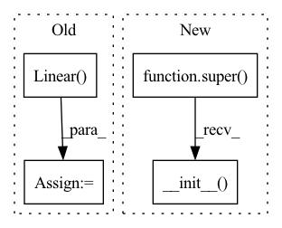

Pattern ID :582

Before Change
self.in_features = in_features
self.out_features = out_features
self.ensemble_size = ensemble_size
self.linear = nn.Linear(in_features*ensemble_size, out_features*ensemble_size, bias, device, dtype)
def forward(self, input: torch.Tensor):
if input.shape[0] != self.ensemble_size:
input = input.unsqueeze(0).repeat(self.ensemble_size)
After Change
device: Optional[Any] = None,
dtype: Optional[Any] = None
):
super().__init__()
self.in_features = in_features
self.out_features = out_features
self.ensemble_size = ensemble_size
self.register_parameter("weight", torch.nn.Parameter(torch.zeros(ensemble_size, in_features, out_features)))
In pattern: SUPERPATTERN
Frequency: 3
Non-data size: 4
Instances
Fragment ID: 1426001
Project Name: typoverflow/utilsrl
Commit Name: 08545e1246f2290d99004032346a6015edb6c6f8
Time: 2022-12-18
Author: typoverflow@outlook.com
File Name: UtilsRL/net/basic.py
Class Name: EnsembleLinear
Method Name: __init__
Parent Class: nn.Module
Fragment ID: 1426003
Project Name: vlsomers/bpbreid
Commit Name: 710b9ac1a28d418bddc41aeeda320ab4de4d17fe
Time: 2018-10-26
Author: k.zhou@qmul.ac.uk
File Name: torchreid/models/resnet.py
Class Name: ResNet50M
Method Name: __init__
Parent Class: nn.Module
Fragment ID: 1426002
Project Name: tmdt-buw/karolos
Commit Name: e52d81127a965c7310bbce3f80dfda7aa7549561
Time: 2020-03-15
Author: scheiderer@uni-wuppertal.de
File Name: agents/nnfactory/sac.py
Class Name: PolicyNet
Method Name: __init__
Parent Class: nn.Module